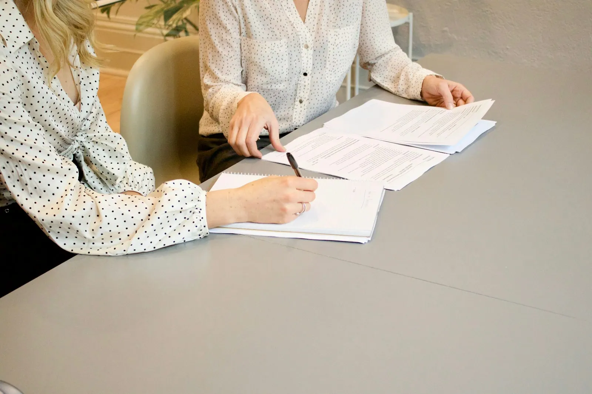

Bij meester Kurt De Cock in Lokeren spreekt u altijd met dezelfde persoon. Hij luistert, legt helder uit waar u staat en zoekt mee naar de beste uitweg. Vriendelijk ontvangen, goed geholpen.
Niet elk probleem hoeft naar de rechtbank. Vaak is een goed advies of een sterke brief al genoeg. En als het toch moet, staat u er niet alleen voor.
Wat zegt de wet over uw situatie, en wat zijn uw mogelijkheden? U krijgt een eerlijk antwoord.
Met de tegenpartij of hun advocaat, met als doel een akkoord dat voor u werkt.
Samen rond de tafel, zodat een conflict niet nodeloos escaleert.
Voor de rechtbank, met een dossier dat tot in de details klopt.

Wordt u verhoord als verdachte, dan hebt u recht op vertrouwelijk overleg met een advocaat voor het verhoor, en op bijstand tijdens het verhoor zelf. U mag ook zwijgen.
Meester De Cock volgde de Salduzopleiding en kan u bijstaan bij uw verhoor.
Bel voor u naar het verhoor gaat09 348 59 64Hoe beter voorbereid, hoe meer u uit het eerste gesprek haalt. Vink af wat u al klaar hebt, en kopieer de lijst als geheugensteun.
Nog niets afgevinkt. Begin gerust bij de eerste.
Heel vriendelijke en vooral heel goede advocaat.Christophe Verhasselt
Vriendelijk ontvangst.Nici Dormann
Bel of mail het kantoor met een korte omschrijving van uw vraag. Meester De Cock neemt zo snel mogelijk contact met u op, en maakt vooraf duidelijke afspraken over het ereloon.
Ik maakte deze demo voor u om te tonen wat er kan. Na een kort gesprek maak ik er iets veel persoonlijkers van, helemaal naar uw wens.
Vrijblijvend. Ik kom langs of we bellen.
Op maat, op uw eigen domein.
Geen voorschot. U betaalt pas als alles klaar is.
Hosting, domeinnaam en kleine wijzigingen, zoals nieuwe openingsuren.
Omdat een voorbeeld meer zegt dan een mail. Zo ziet u meteen wat er kan, en het kost u niets.
Nee. Het gesprek is vrijblijvend. Vindt u het niks, dan is het daarmee gedaan.
Na ons gesprek staat uw site binnen 10 tot 14 dagen online.
Zeker. Uw domeinnaam kan gewoon blijven, de nieuwe site komt in de plaats van de oude.
Nee, dat doe ik op basis van ons gesprek. Eigen foto's zijn mooi meegenomen, maar niet nodig om te starten.